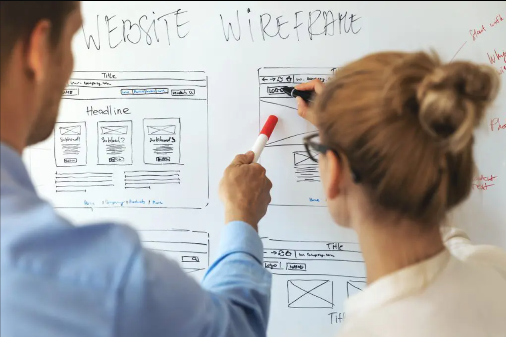

Uso da UML em
Desenvolvimento de Software

A Trindade do Desenvolvimento de software
Vamos começar entendendo como a UML representa a estrutura do software. Isso envolve os
diagramas que mostram os elementos estáticos do software, como suas classes, objetos,
interfaces e relacionamentos entre eles.
Imagine a estrutura de um prédio: temos as diferentes partes que o compõem, como fundação,
andares, paredes e janelas. Na UML, esses elementos correspondem aos diferentes diagramas,
como o Diagrama de Classes, que retrata as classes do software, seus atributos e métodos, e
o Diagrama de Objetos, que mostra instâncias específicas dessas classes em um ponto
específico do tempo.
Quando compreendemos a estrutura do software na UML, conseguimos visualizar como as partes
do programa se relacionam e interagem entre si. Isso é fundamental para construir um
software bem organizado e funcional.
Após entendermos a estrutura, podemos avançar para os outros aspectos, como o comportamento
e as interações, para formar uma visão completa da Modelagem de Software usando a UML.
Modelar, Comunicar e Documentar.
Modelagem de Software usando a UML
Imagine a UML como um mapa que os construtores usam para desenhar e planejar uma casa antes
de construí-la.
A Modelagem de Software é como criar um plano detalhado para um aplicativo ou programa. A
UML nos ajuda a representam diferentes aspectos do software, como sua estrutura,
comportamento e interações.

A Modelagem de Software usando a UML é um processo essencial que oferece uma visão abrangente
e estruturada do sistema a ser desenvolvido. Assim como um arquiteto cria plantas detalhadas
para uma construção, a UML permite aos desenvolvedores e arquitetos de software elaborar
diagramas que representam visualmente cada parte do sistema.
Esses diagramas, como o de casos de uso, classes, sequência e estados, funcionam como uma
linguagem universal entre equipes de desenvolvimento, clientes e stakeholders,
possibilitando uma comunicação mais eficaz. Por exemplo, um diagrama de classes descreve a
estrutura do sistema, mostrando as entidades, seus atributos e relacionamentos, enquanto um
diagrama de sequência ilustra a interação entre diferentes partes do sistema em uma
sequência temporal.
A UML oferece um guia para entender, comunicar e desenvolver software de forma mais eficiente e organizada. Ao utilizar esses diagramas, os desenvolvedores podem visualizar melhor a arquitetura, prever problemas potenciais e otimizar o design antes de iniciar a codificação. Em resumo, a Modelagem de Software com UML é fundamental para um desenvolvimento mais preciso, orientado por requisitos e com maior qualidade.
Comunicação entre Desenvolvedores e Stakeholders
A comunicação entre Desenvolvedores e Stakeholders é essencial. Os desenvolvedores são como
arquitetos e construtores, e os stakeholders são as pessoas interessadas no resultado final,
como clientes ou gerentes.
A UML serve como uma linguagem comum para que todos possam entender e discutir ideias sobre
como o software deve ser.
Os desenvolvedores utilizam a UML para traduzir as ideias e os requisitos dos stakeholders em modelos visuais claros e abrangentes. Esses modelos não só representam as funcionalidades do software, mas também facilitam a identificação de possíveis lacunas ou inconsistências nos requisitos. Por exemplo, ao criar diagramas de caso de uso, stakeholders não técnicos podem facilmente compreender como o sistema será utilizado, enquanto diagramas de classes oferecem uma visão estrutural compreensível para todos os envolvidos no processo.
Além disso, a UML permite que todos os participantes do projeto estejam na mesma página, evitando mal-entendidos e garantindo que o desenvolvimento ocorra de acordo com as expectativas. Através da utilização desses diagramas, é possível realizar discussões mais focadas e precisas sobre o software em desenvolvimento. Isso não apenas agiliza o processo de tomada de decisões, mas também possibilita a identificação precoce de possíveis problemas ou conflitos de requisitos, resultando em um software mais alinhado com as necessidades e desejos dos stakeholders.
Documentação de Software
A Documentação é como manter registros detalhados de todo o processo de construção da casa, desde o plano inicial até as mudanças feitas ao longo do tempo. Na UML, isso é feito por meio de notas, comentários e descrições nos diagramas, ajudando a entender as decisões tomadas durante o desenvolvimento.

Os registros detalhados na documentação UML são essenciais para acompanhar o raciocínio por trás das escolhas de design e funcionamento do software. Ao adicionar notas explicativas nos diagramas, os desenvolvedores conseguem registrar informações adicionais sobre por que uma decisão específica foi tomada ou como determinado componente deve se comportar em diferentes situações. Isso não apenas auxilia no entendimento atual do sistema, mas também facilita futuras atualizações ou modificações, pois mantém um registro claro do histórico de desenvolvimento.
Além disso, a documentação UML serve como um valioso recurso educacional e de integração para novos membros da equipe. Com as informações documentadas nos diagramas UML, novos desenvolvedores podem compreender mais rapidamente a estrutura e o funcionamento do software, reduzindo o tempo necessário para se familiarizar com o projeto. Isso também contribui para um ambiente de trabalho mais colaborativo, onde a documentação serve como um meio de comunicação para transmitir conhecimento e decisões importantes ao longo do ciclo de vida do software.